Сургут(хант. Сәрханӆ, Сө̆ркут) — город в России, в Ханты-Мансийском автономном округе — Югре, административный центр Сургутского района. Крупнейший город округа.
У города имеется многофункциональный официальный сайт города.
В интернете можно найти много сайтов, посвященных Сургуту и его достопримечательностям:
2. Город Сургут: климат, экология, районы, экономика.
3. Сургут-путеводитель, как добраться, где остановиться.
Как административно-территориальная единица ХМАО имеет статус города окружного значения. В рамках местного самоуправления образует муниципальное образование город Сургут со статусом городского округа как единственный населённый пункт в его составе. Один из немногих российских региональных городов, превосходящих административный центр своего субъекта федерации как по численности населения, так и по экономическому значению.
Город занимает 3-е место в рейтинге городов, вносящих наибольший вклад в ВВП России, уступая лишь Москве и Санкт-Петербургу. В 2019 году занял 3-е место (наравне с Нижневартовском) в списке богатейших городов России, опережая Санкт-Петербург. В 2021 году Сургут занял 10-е место в рейтинге самых быстрорастущих городов Европы (ООН, издание Visual Capitalist) — по оценкам специалистов, население Сургута с 2020 по 2025 годы будет увеличиваться на 1,17 % в год. Входит в тройку городов с самым большим количеством автомобилей на 1000 жителей (≈ 380 автомобилей), занимает 4-е место по процентному содержанию импортных автомобилей (86 %). Также занимает 4-е место в рейтинге городов России с самой дорогой недвижимостью и (в 2019 году) 4-е место в рейтинге городов с самыми высокими (по покупательной способности) заработными платами в стране, уступая лишь Москве, Южно-Сахалинску и Салехарду.
В декабре 2019 года Сургут занял второе место среди 100 лучших городов России по данным Института территориального планирования «Урбаника». В феврале 2021 года, город вновь занял 2-е место в рейтинге городов России по комфортности и доступности жизни, опередив Тюмень, Санкт-Петербург и Москву. Также, Сургут попал в ТОП-10 городов для одиночного отдыха (сервис TVIL, 2021). В рейтинге качества городской среды (Минстрой РФ, 2021) Сургут занял 2-е место среди крупных городов России. А в рейтинге по уровню развития государственно-частного партнёрства (2020), город занял 3-е место по стране (уступив лишь Москве и Санкт-Петербургу). В 2021 году, в рейтинге корпорации ВЭБ.РФ, Сургут занял 2 место в УрФО по качеству жизни, уступив лишь Ханты-Мансийску.
Источник:https://ru.wikipedia.org/


19 февраля 1594 года царём Фёдором Иоанновичем был дан Указ (Наказ) воеводе Фёдору Барятинскому и письменному голове Владимиру Оничкову о строительстве «города Сургута» близ остяцкой крепости князя Бардака (Бородока). В конце лета — начале осени того же года был построен деревянный рубленый город. Разместились в нём воеводский двор, пороховой погреб, тюрьма, государевы амбары, Троицкая церковь, а позднее — Гостиный двор. Население составляло 155 служивых людей. К ведомству сургутских воевод принадлежали все остяцкие «городки и волости, которые пошли от Сургута вниз по Оби к устьям Иртыша и которые пошли вверх по Оби к Пегой Орде и выше».
Первыми воеводами Сургута считаются Фёдор Барятинский-Борец и Владимир Аничков. Сегодня на центральной улице города стоит памятник основателям города: воеводе, купцу, казаку и священнику.
Есть и другая версия: на основании летописи «Гази-Барадж Тарихы», известной лишь как часть «Джагфар Тарихы», подлинность которой вызывает серьёзные сомнения исследователей, и упоминающей в шестой главе об основании крепости Сюрхот неким Байтуганом, делаются предположения о том, что Сургут был основан булгарами на шесть веков раньше — в 940—970-х годах, однако подтверждения этому не обнаружено.
Источник:https://ru.wikipedia.org/
| 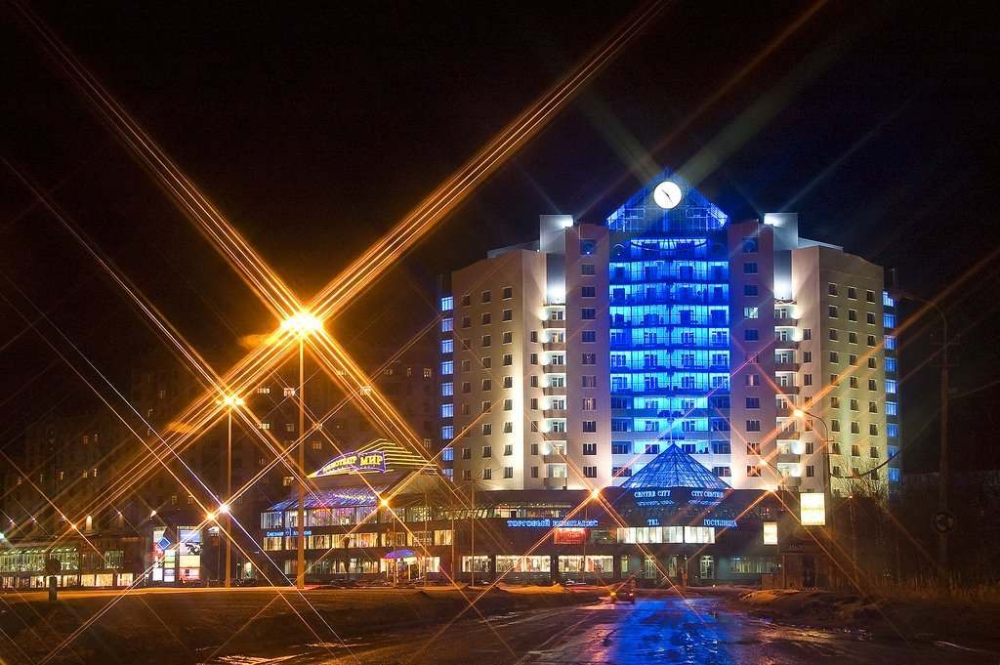 | 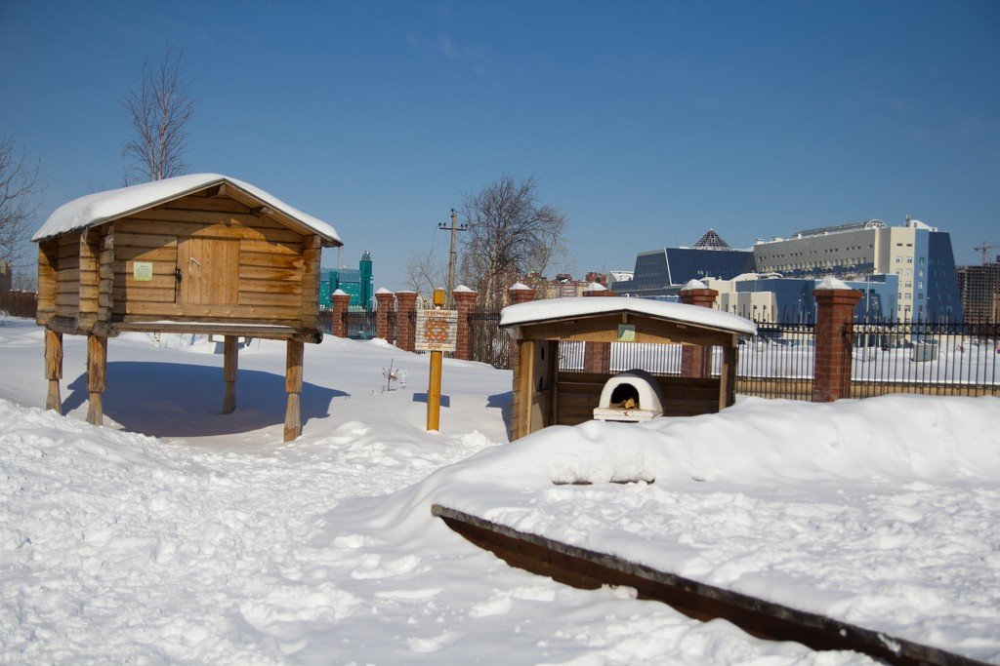 |
|---|---|
| 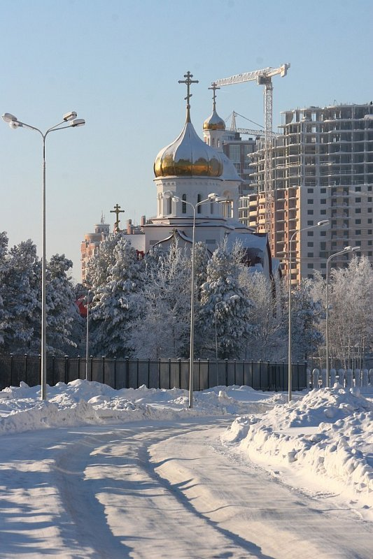 | 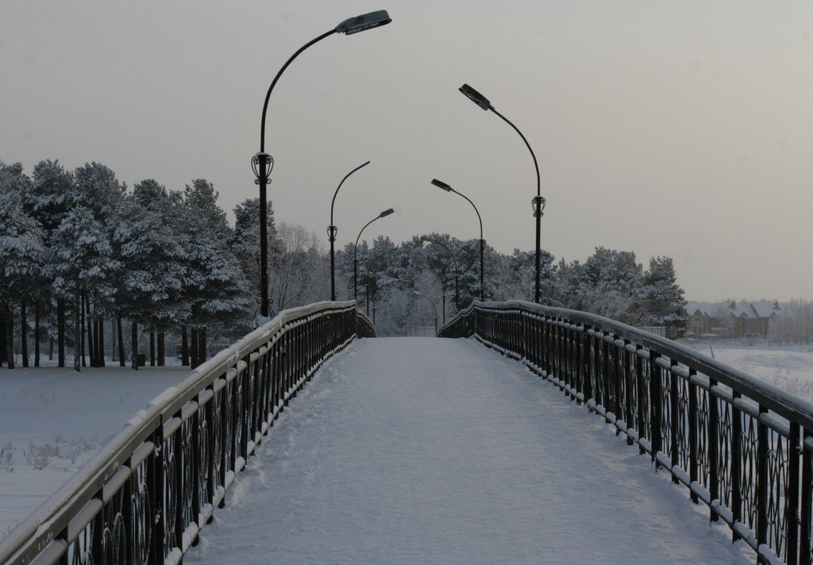 |
| 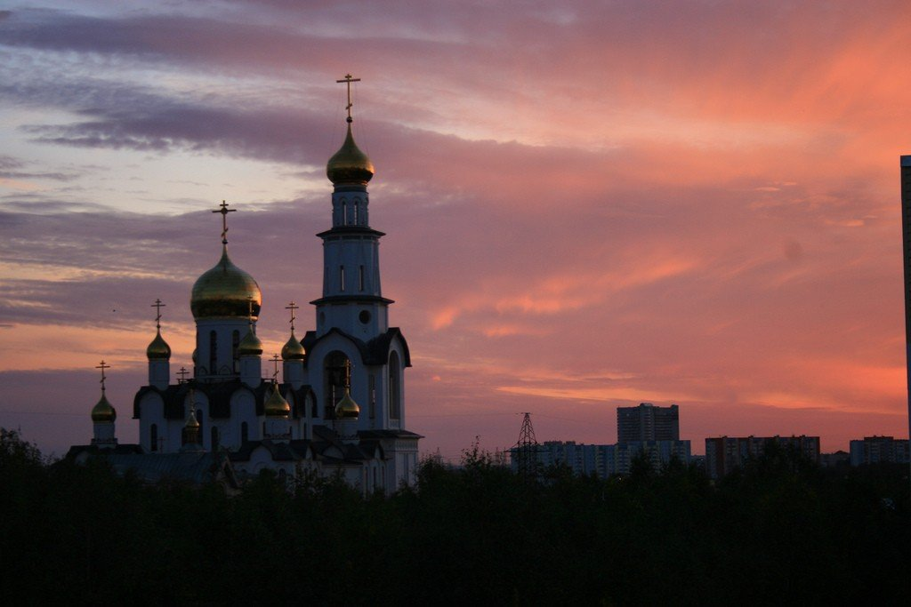 | 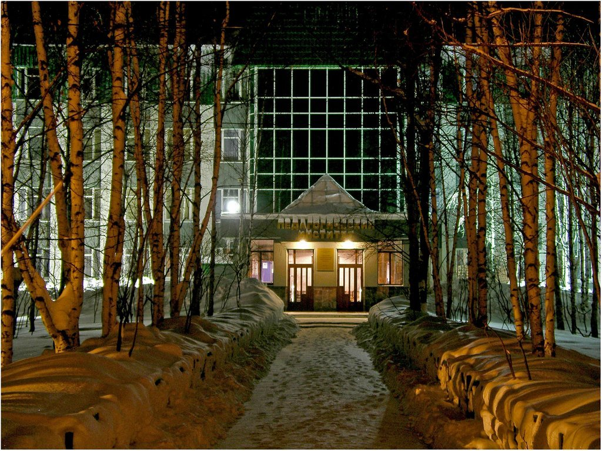 |
| 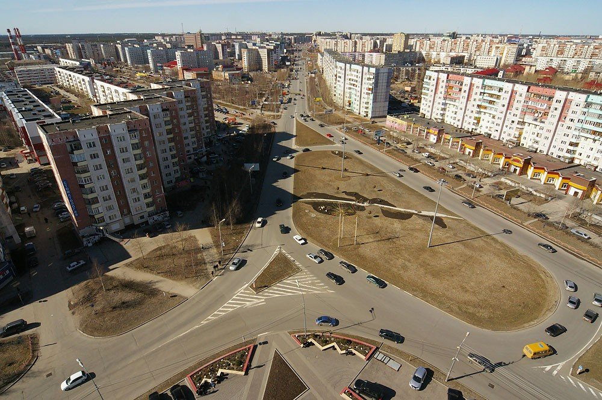 | 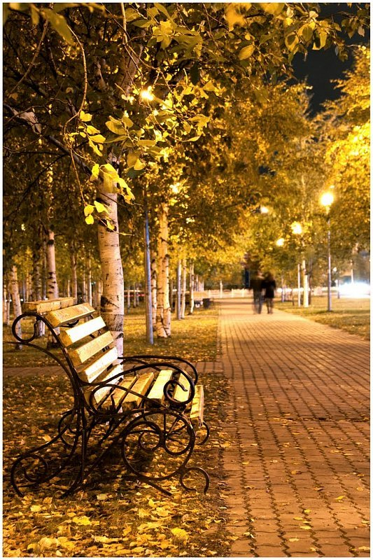 |
| 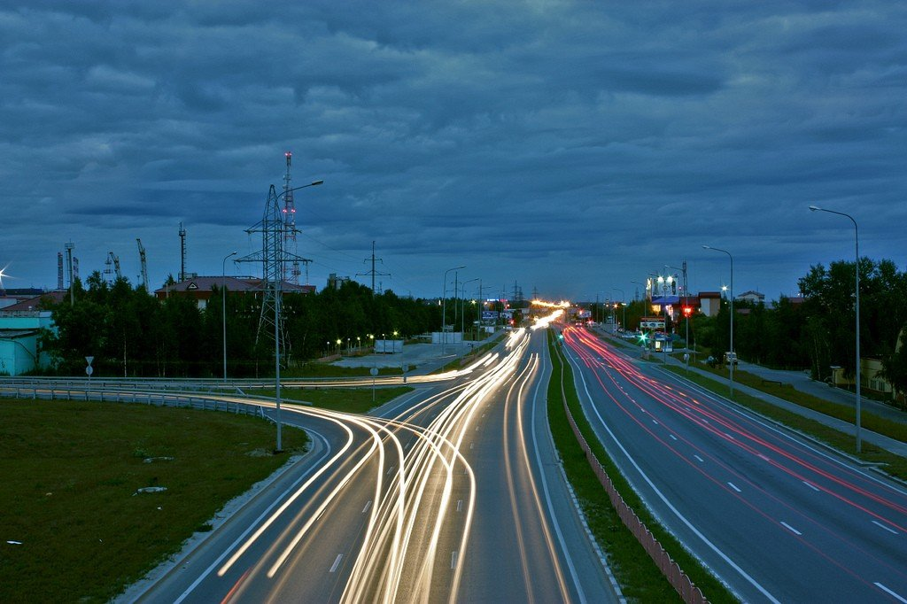 | 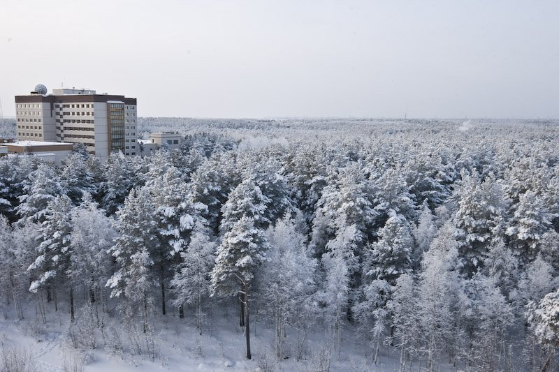 |
| Памятник основателям Сургута. В самом сердце Сургута 12 июня 2002 г. был установлен символичный памятник, объединяющий прошлое, настоящее и будущее. Речь про отлитые в бронзе на одном из предприятий Петербурга люди, чьими руками строился город. 6,5-метровые фигуры князя и воеводы — это Федор Борятинский и Владимир Аничков, прибывшие в Сибирь по царскому распоряжению для постройки города. Фигура казака олицетворяет людей, принимавших участие в строительстве (большинство из которых были казаками), местных жителей и добровольных переселенцев. Священник же символизирует крепкую веру и духовность русского народа. Высота всего памятника — 15 м, а на его изготовление ушло 12 месяцев и 40 тонн бронзы. Под фундаментом заложена капсула-письмо для потомков. | 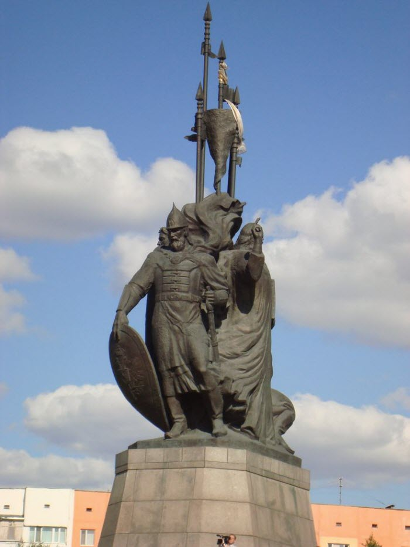 |
|---|---|
| Историко-культурный центр «Старый Сургут» Эту выставочную площадку на берегу Саймы вполне можно назвать музеем под открытым небом. Здесь любой желающий может познакомиться с историей города начала XX века. Экспозиция достопримечательности представлена 14 зданиями, которые реконструировали и перевезли сюда из разных частей Сургута. Все они имеют историческую ценность. Их можно осмотреть не только снаружи, но и внутри. Каждое из них — кладезь экспонатов. Быт северных народов, иконопись, устройство дома, коллекция флоры и фауны — это лишь маленький список того, с чем можно ознакомиться в этой этнографической «деревне». А можно не только посмотреть, но и самостоятельно изготовить сувенир на одном из предлагаемых мастер-классов, попробовать национальные блюда, принять участие в спортивных состязаниях или примерить старинную одежду. | 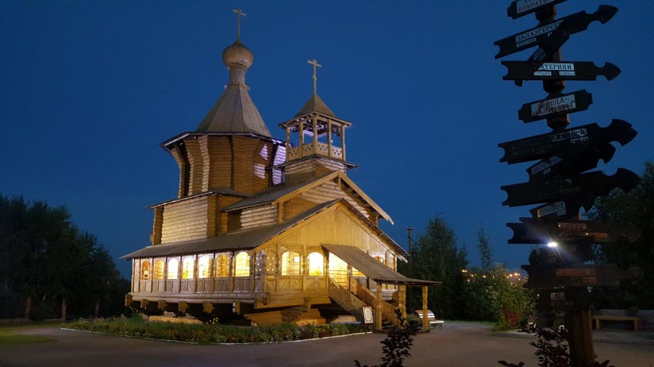 |
| Храм Преображения Господня Храм этот — еще один символ Сургута. Хотя он не может похвастаться многовековой историей, как сам город, считается самым красивым храмом не только в Сургуте, но и во всем Ханты-Мансийском округе. Строился он по просьбе православной общины. Она появилась в городе еще в 1987 г., но не имела церкви, потому что один из самых больших и красивых храмов — Троицкий — был разрушен в годы становления советской власти. Для нового прихода была выбрана площадка в живописном месте на речном берегу, но перестройка разрушила все планы верующих. Строительство затянулось на 12 лет и только в 2003 г. тут состоялось первое богослужение. Внутреннее и внешнее убранство этого соборного храма поражает своей красотой и величием. Белоснежный 13-главый корабль украшен керамическими изразцами и арками. На отдельно стоящей колокольне можно увидеть мозаичные святые лики, выполненные из итальянской смальты. Подлинное восхищение вызывают настенные росписи внутри храма и мраморный пол, на который больно смотреть. Но особая гордость — это колокола. Каждый из них украшен рельефными иконами и текстами из Библейских Писаний. В праздничные дни их мелодичный звон, для настройки которого приглашали звонаря специально из Москвы, несет гостям и жителям Сургута благую весть. | 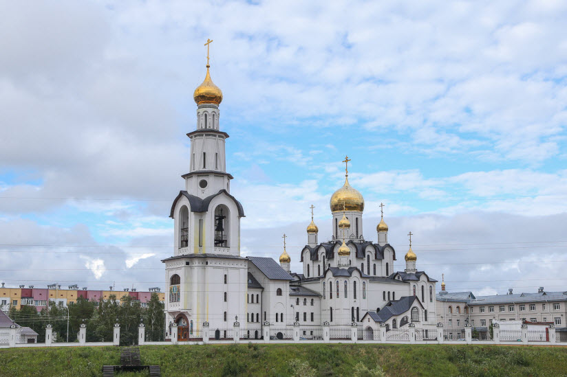 |
| Югорский мост Вантовый мост через Обь не только один из самых длинных в мире, но и один из немногих, поддерживаемых лишь одним пилоном 150-метровой высоты. Кроме пилона, он держится еще на 15-ти опорах. Общая длина этой железобетонной конструкции вместе с подъездами к мосту составляет почти 15 км. Через мост проходит автострада шириной в 15 м, соединяющая Сургут и Нефтеюганск. До его постройки автомобилистам приходилось переправляться через Обь на пароме или по зимнему льду. По результатам строительства Югорский мост внесен в Книгу рекордов Гиннесса, а автор проекта получил академическое звание. | 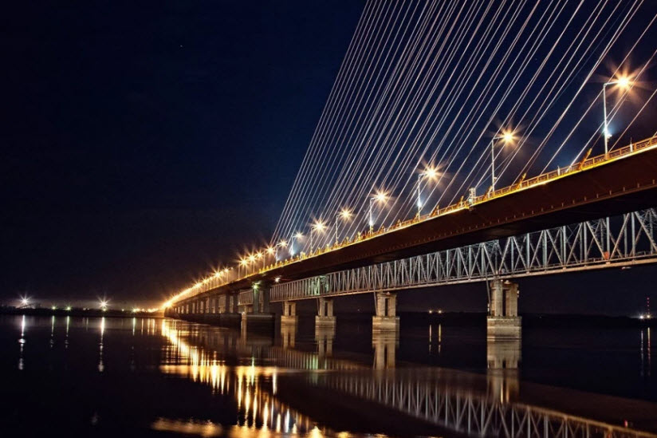 |
| Черный лис Животное это увековечили в камне не случайно – именно черный лис красуется на гербе Сургута. Торжественное открытие памятника геральдическому животному состоялось в 2006 г. и было приурочено ко Дню города. На композиции лис изображен прыгающим по скалам и символизирует местную легенду о спустившемся с небес всаднике в облике этого животного. Сегодня это популярная достопримечательность в Сургуте. Местные верят, что если загадать желание и потереть лапу лиса, то он его обязательно исполнит. Ну а туристы сюда приходят, чтобы сфотографироваться рядом с символом города. | 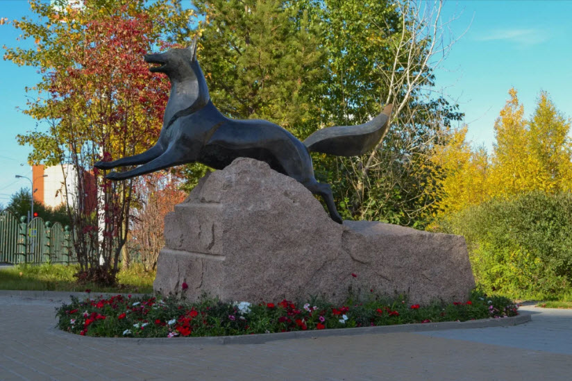 |
| Парк «За Саймой» Сосновый массив в самом центре Сургута — одно из самых любимых мест горожан. В зимнее время здесь обустроена лыжня, а в летнее можно кататься на роликах по многочисленным дорожкам парка. Одна его часть отдана под небольшой ботанический сад, засаженный редкими видами флоры, в другом притаился маленький зоопарк с необычными питомцами. Для малышей здесь устроены аттракционы и игровая площадка. Главной достопримечательностью является плавающий фонтан в парковом водохранилище. Он установлен на понтон, который двигается по строго определенному маршруту, подсвечивается и поет. А еще в «Сайме» можно встретить множество белок, которые совершенно не боятся людей и позволяют кормить себя с рук. | 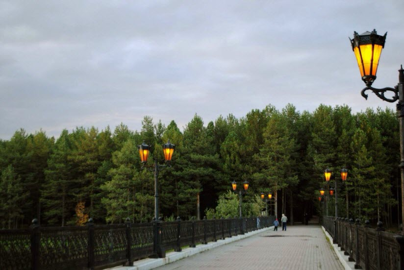 |
Автор: Михаил Долгополов
Спасибо тебе, мой город,
За то, что ты стар и молод,
Что схожих таких и разных
Под небом одним собрал,
За зверя в лесу и птицу,
За нефтью умытые лица,
За то, что в жару и холод
Нам домом уютным стал.
А там, где трескучий мороз,
А там, где созвездье берез
В Сургут по дороге таежной
Приходим мы,
А там, где поют купола,
Как день, ночь в июне бела,
Там, где черное золото Родины,
Льется черное золото Родины.
И где б меня ни носило,
Повсюду звезда светила,
Что стала вдруг путеводной,
Мне, указав маршрут,
Туда, где в заре лучистой
Стоит над рекой сибирской
Прекрасный и величавый
Мой город, мой дом – Сургут.